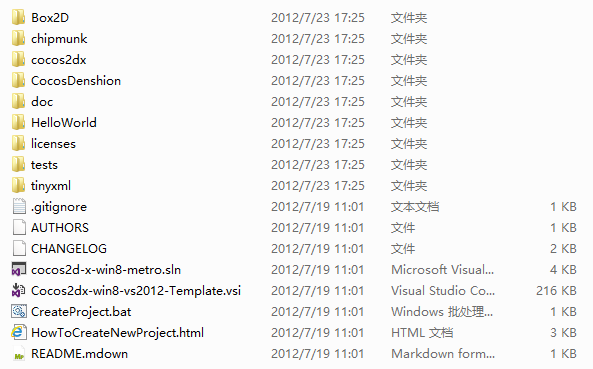

Supported operating systems:
Windows 8 RP Build 8400 x86/x64, ARM is not supported now.
Visual Studio:
Visual Studio 2012 RC
If you have downloaded cocos2dx-win8 from the Web, either as a distribution .zip file, or as a Git archive, unpack it. The result should be a set of files like this:

In order to easily to create cocos2dx-win8 project in Visual Studio, we need to install the Visual Studio template.